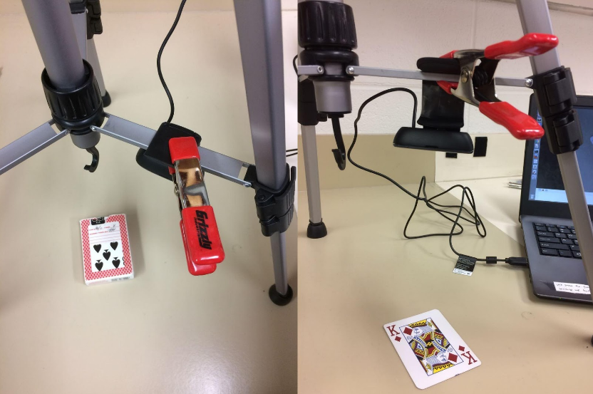
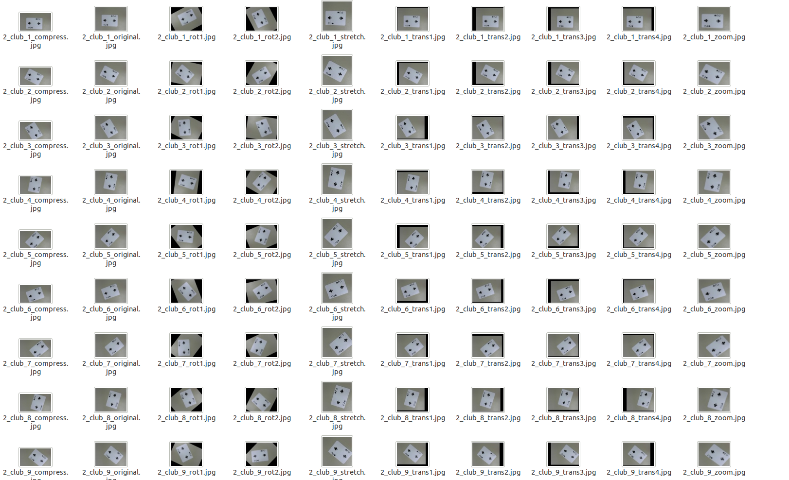

Project Introduction
The goal of our project is to classify cards for a game of BlackJack. Given an image of a card, can the computer correctly classify it? (Ace, 2-10, Jack, Queen, King).
GitHub page is here.
Data and Approach
We obtained the images by taking pictures of each card with an outer webcam fixed at a constant height and labeled them by changing file name.
The image shows below shows how we get dataset.
The original dataset contained 1,040 images of one deck of 52 cards. Each card has 20 pictures with the same background in different orientation.
We applied 10 data augmentation methods (translations, rotations, scaling, zooming, stretching and compressing) to each image in the original, resulting in a new augmented dataset of 10,400. The reason for doing this step is to explore the feature set the algorithms can explore and increase the accuracy when classifying the cards.
The image shows below shows the final dataset.
Methods and Results
Algorithms we initially looked at were K-Nearest Neighbor (KNN, k = 5), Support Vector Machine (SVC, linear kernel), and Neural Net (NN, 15 Layers) algorithms from scikit-learn and Convolutional Neural Net (CNN) algorithms from the tflearn package. 10-fold cross validation was used to verify the accuracy of the models we generated.
CNN has the highest result: 98.31%, which uses 2 layers with 250 neurons.